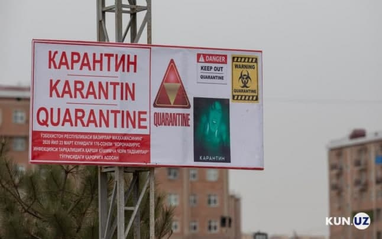
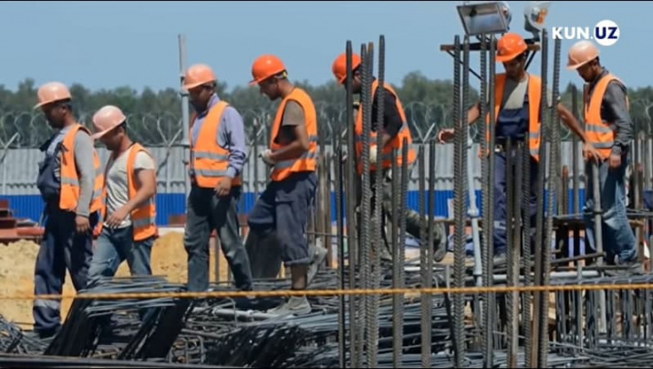
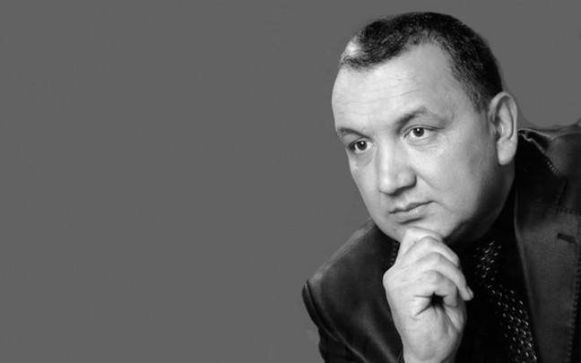
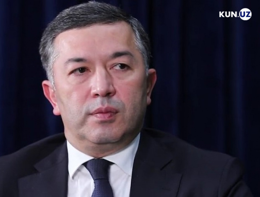
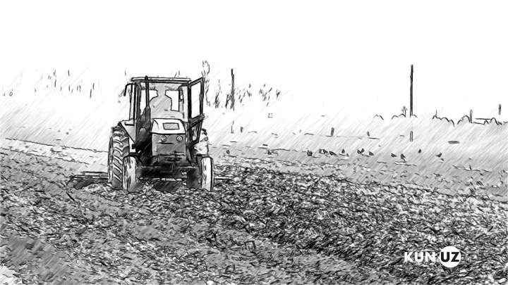
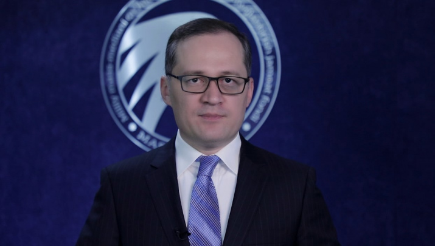
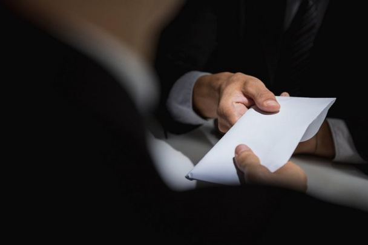

|
|
ЎЗБЕКИСТОН | ЖАҲОН | ИҚТИСОДИЕТ | ЖАМИЯТ | ФАН ВА ТЕХНИКА | СПОРТ | KUN.UZ LIGHT | АУДИ ХАБАР |
| Худудлар |
Тошкент ш. | Қорақалпоғистон | Андижан | Фарғона | Наманган | Самарқанд | Бухора | Хоразм | Сурхондаре | Қашқадаре | Жиззах | Сирдаре | Тошкент вил. | Навоий |
|  |
18 апрелдан карантин қоидалари кучайтириладиБугун, 17 апрел куни бош вазир Абдулла Арипов бошчилигида коронавирусга қарши кураш комиссиясининг кенгайтирилган йиғилиши бўлиб ўтмоқда. Бу хақида Kun.uz хабар берди. |
|
|||||

|
15 та йирик давлат корхонасининг акциялари очиқ савдога чиқарилди |
 | Россия ИИВдан МДХ давлатларига ультиматум: 15 июнгача ноқонуний мигрантлар олиб чиқилиши керак |
<<Бино чўкканини таъмир пайтида билиб қолишган>> - қурилиш вазири <<Наврўз> |
|||
|  | Ўзбекистон халқ артисти Мирза Азизов вафот этди. У коронавирусга чалиниб, Зангиотадаги шифохонага еткизилганди |  | <<Гапириш осон, аммо ташкиллаштириш жуда қийин>> - Бехзод Мусаев тиббиет сохасидаги муаммолар ва ечимлар хақида |
Россия ФХХ Беларусда давлат тўнтаришининг олди олинганини маълум қилди |
|||
| Мухарир танлови | Хитой ЯИМ биринчи чоракда рекорд даражада ўсди |
||
|  |  |  | Зеленский Путин унинг қўнғироғига жавоб бермаганини айтди ОЧЛ. ОКМК ТОжикистоннинг<< Истиқлол>>клубига мағлуб болди |
| Ерни эгасига бериш керак, дехқоннинг ишига хеч ким аралашмаслиги шарт. Тахлил ва таклиф |
<<Хорижий ташкилотлар талаб қўйишдан олдин миллат менталитетини инобатга олиши керак>> - Комил Алламжонов ЛГТБ масаласида |
Ўзбекситон қайси сохалар ходимлари энг қўп коррупцияга қўл ураетгани маълум қилинди |
Россия ўз худидидан 20 нафар чехиялик дипломатни чиқариб юбормоқда |